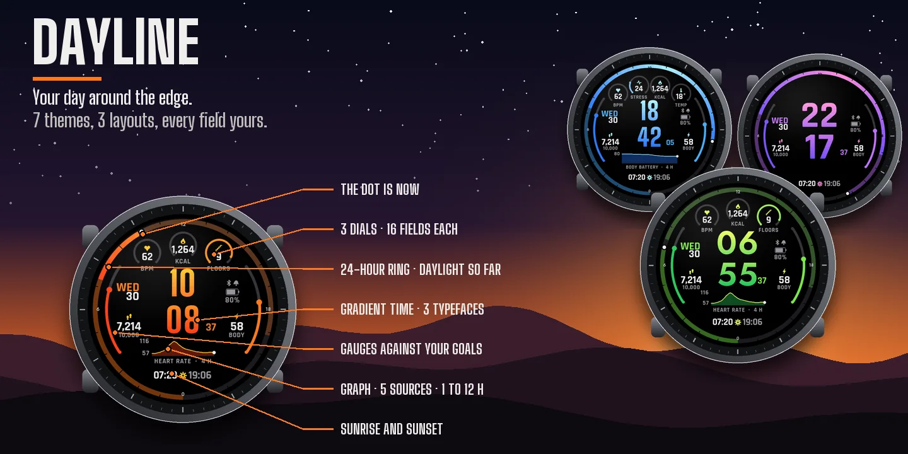
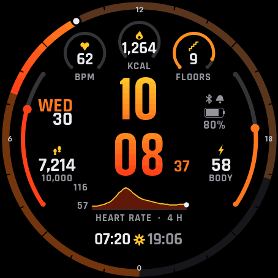
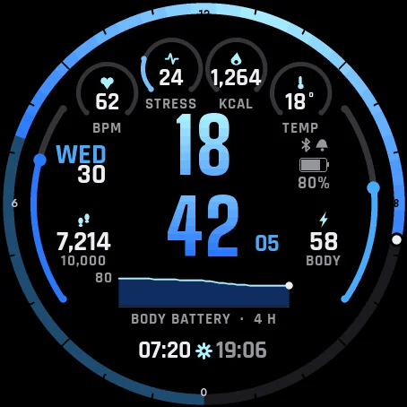
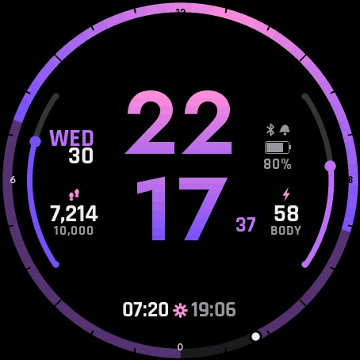
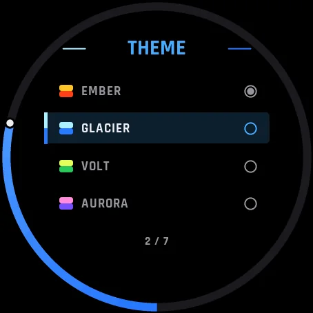
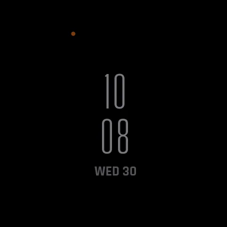

TibereJ › Watch faces › Dayline
Watch face for Garmin watches
Dayline
Your day around the edge







Settings on the watch
Hold UP, pick Watch Face, select Dayline, press START, then Customize. The menu is drawn in the style of the face: a short How it works guide, the theme, the layout, the typeface, every dial, gauge and field, the graph, and switches for the seconds and the always-on brightness. The same settings are in Garmin Connect if you prefer the phone.
Your day around the edge
A 24-hour ring runs around the face: noon at the top, midnight at the bottom. The daylight between sunrise and sunset is coloured up to now, and a dot marks the current time. Sunrise and sunset come from the location of your watch weather; without it, the ring simply fills from midnight to now.
Everything at a glance
The time on two lines in a colour gradient, with the seconds. Three dials at the top, two gauges on the sides, a graph of the last hours, sunrise and sunset at the bottom, the date, Bluetooth, alarm and battery. On watches with a touchscreen, press and hold the face to switch the graph between heart rate, Body Battery, stress, altitude and pressure.
Make it yours
- Seven themes: Ember, Glacier, Volt, Aurora, Mono, Crimson, and a custom theme made of two colours of your choice among twelve.
- Three layouts: Full, Clean (a bigger time, no dials, no graph) and Dense (four dials and a wider graph).
- Three typefaces for the time: condensed, technical, geometric. The time in the theme gradient, in white or in the accent colour.
- Each dial and the bottom field: steps, heart rate, calories, floors, Body Battery, stress, watch battery, distance, intensity minutes, altitude, temperature, notifications, sunrise or sunset, respiration, pressure, or nothing.
- Each gauge: steps, Body Battery, stress, watch battery, floors or intensity minutes, filled against your goal or against 100.
- The graph: heart rate, Body Battery, stress, altitude or pressure, over 1, 4 or 12 hours.
The graph draws only what your watch has kept. If your watch has no value, the face shows -- rather than a made-up number.
Try it first
Dayline Lite is free: the same ring, dials, gauges and heart rate graph in the Ember theme, with fixed fields.
Always-on
On AMOLED watches, a separate always-on design on a black screen: thin digits, the date and the dot of the current time. It shifts slightly every minute to protect the screen. On MIP watches the full face stays on, without the seconds.
On MIP and instinct watches
On MIP screens the time is drawn in two solid colours instead of a gradient. On Instinct watches with a black and white screen, the face uses the Clean layout in white on black and shows your step goal in the round window; themes and colours do not apply there.
Compatible with the Garmin watches listed below. English only. Nothing leaves the watch.